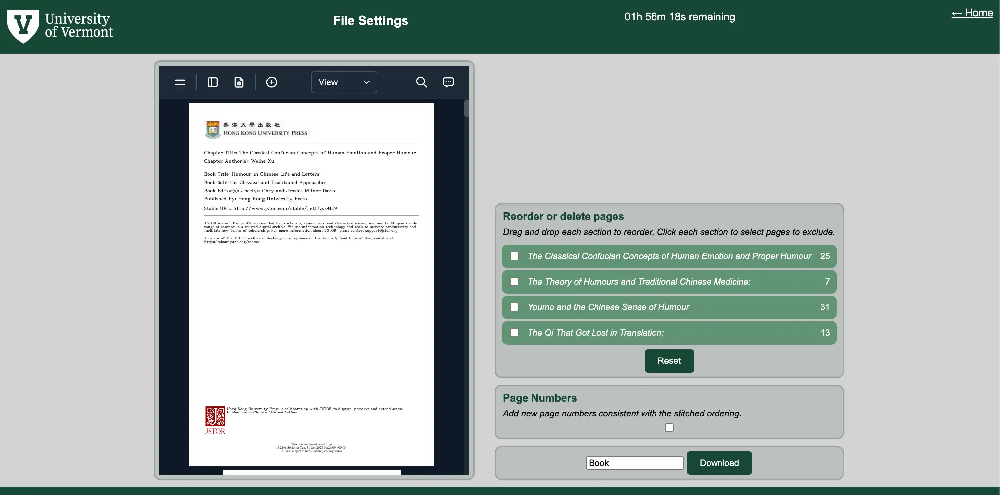
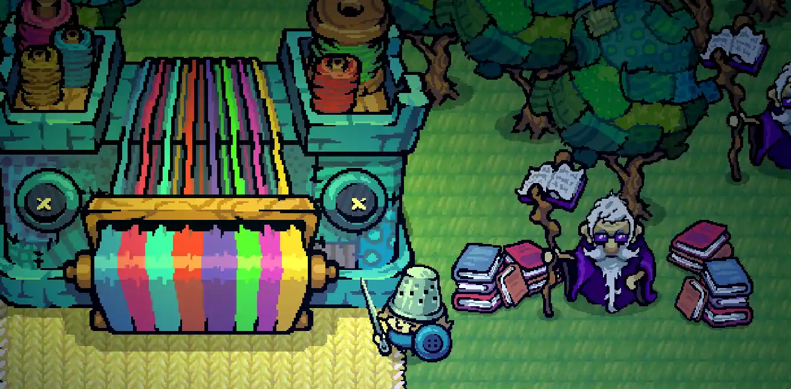
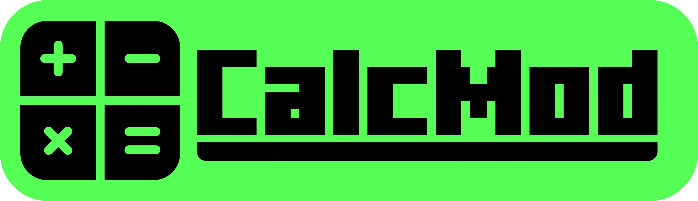
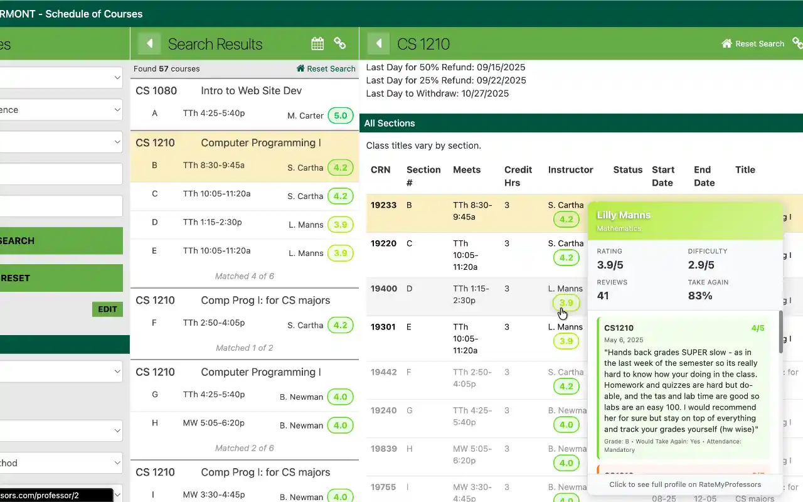
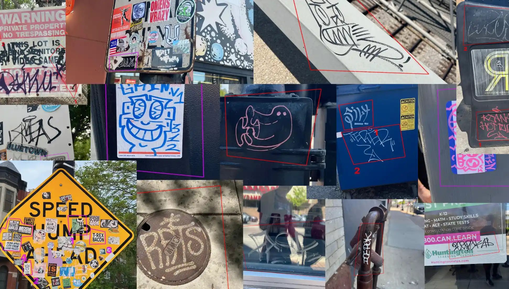
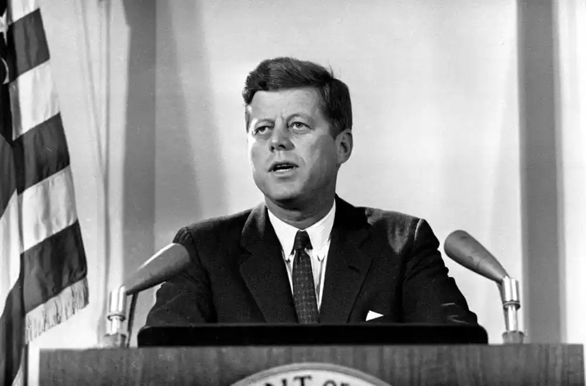
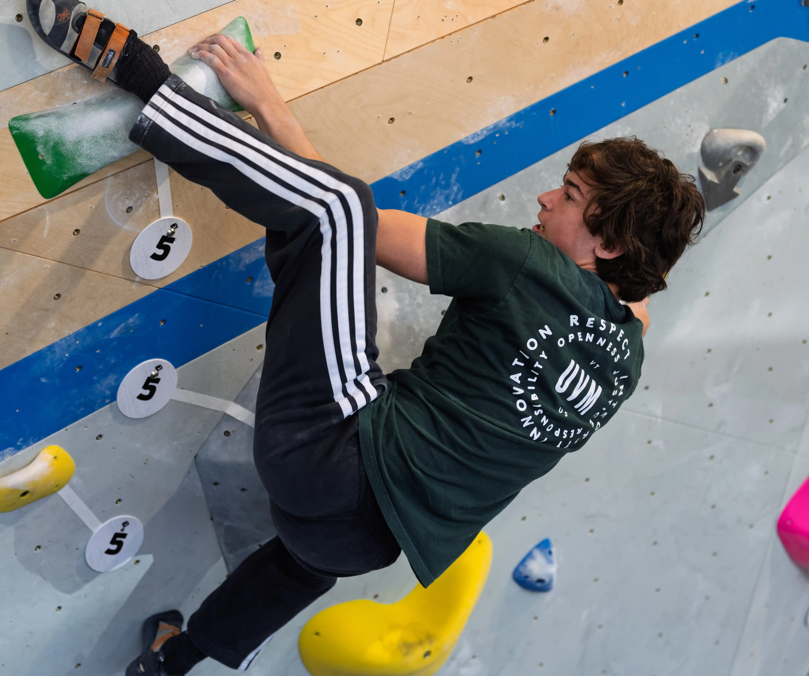
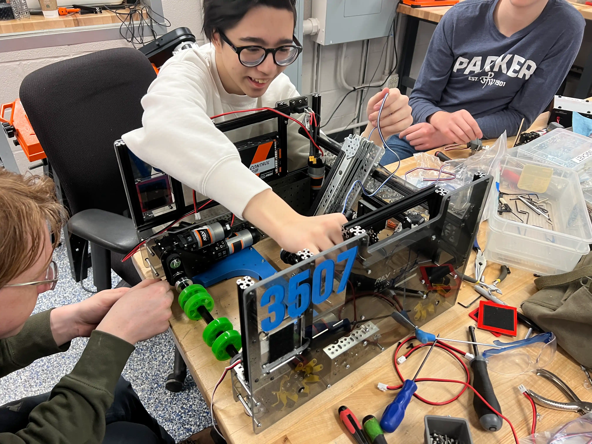
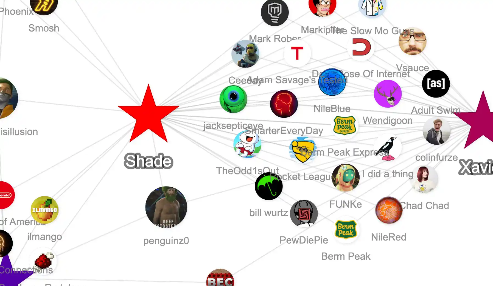

UVM PDF Stitcher
2026

Open-Source Document Management Site
I've been helping develop a web app for the UVM library that makes it easier for them to stitch together multiple chapters of PDF documents into one file. I worked on connecting a Python Flask backend to a live JavaScript frontend so users can preview changes and settings in real time. It's been a good introduction to full-stack development at UVM's VERSO.
Threadbare Story Quest
2026

Open-Source Game For Vermont Cup
I contributed to an open-source Godot game for the Vermont Cup game development competition through Endless OS Foundation's Threadbare project. The idea is that Burlington high school students modify and expand the game as part of a contest, so we intentionally designed parts of the mechanics to feel unfinished and moddable. I mainly worked on movement systems and abilities like teleportation/blink mechanics while trying to keep the code approachable for newer developers.
CalcMod
2022-Present

Open-Source Minecraft Mod
I co-develop and maintain a Minecraft mod with millions of downloads. I mostly focus on UX decisions, testing new releases, writing documentation, and responding to community feedback through GitHub. It's been fun working with a friend to boost a hobby project into something used by hundreds of thousands of players every month and a source of passive income.
UVM Rate My Professor
2025

Course Application Chrome Extension
I built this Chrome extension because I got tired of switching tabs during course registration to look up professors manually. It integrates Rate My Professors data directly into UVM's registration system so students can easily spot which classes to take (or avoid at all costs). The extension has over 100 users at the moment, with big spikes around course registration.
Graffiti Map
2025

Chicago Street-Art Documentation
How local is graffiti? As my senior capstone “May Term” project at FWP, I spent a week with a friend walking around Chicago documenting graffiti with geotagged photos. We logged and categorized over 460 unique pieces, and I used ArcGIS to build an interactive map to answer this question.
Cuban Missile Crisis Game

Historical RPG
I made this Twine-based RPG to explore the Cuban Missile Crisis through President Kennedy's
perspective. Follow the path of history or stray for potentially nuclear results.
Will you fight back and look strong?
Will you cave and proceed diplomatically?
Which should take priority: humanity or reelection?
Rock Climbing
2024-Present

UVM Climbing Team
I first started climbing near the end of high school, and got hooked by its collaborative puzzle solving aspect and its allure for outdoor shenanigans. I'm now part of the UVM climbing team and spend a lot of time projecting problems with friends and other climbers. Since joining the team I've begun to dip my toes into competitive bouldering.
Art

A lot of my projects end up mixing programming and visual design, so I spend a ton of time experimenting with digital art tools. Check out some of my art below!
FTC Robotics
2021-2025

Robotheosis: Head Of Design
I was Head of Design for FTC Team Robotheosis throughout high school and helped design multiple robots that made it to the Illinois state competition, one of which won 1st place in design. I worked heavily in CAD, fabrication, portfolio writing, outreach design, and team organization. Robotics taught me a lot about iterative design, collaboration under pressure, and how to recover when things inevitably break the night before competition.
YouTube Network
2025-Present

Subscription Visualizer Site
This is an in-progress project that visualizes the overlap between YouTube subscriptions across groups of friends. The site uses Node.js and Google Cloud services to process and compare channel networks, then displays the shared connections visually. I mostly wanted an excuse to explore graph visualization and recommendation-style systems in a fun way. LMK if you can think of a good way to scrape a user's subscribed channels, because right now that's the main limitation!
This Website!
2026
I built this site from scratch as both a portfolio and a sandbox for graphics experiments. The landing page uses a custom Three.js + TSL GPU-rendered Newton fractal that updates interactively based on cursor movement and adapts responsively for lower power devices.